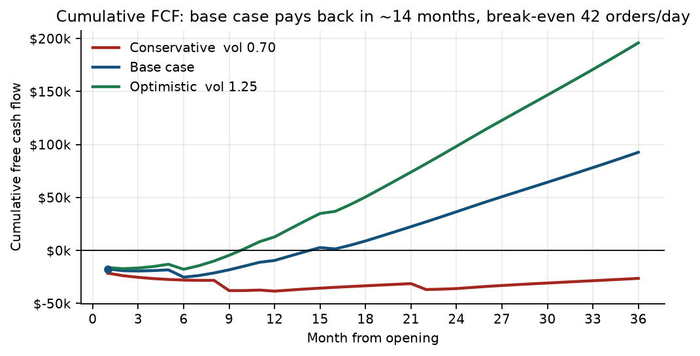

دراسة جدوى تشغيلية · Operations Research
مَعمل طبي — من الفكرة إلى التشغيل
أركوت، الخرطوم — السودان · سعة افتتاحية: صورة دم كاملة + كيمياء نصف آلية + فحوص عامة
الخلاصة في سطر واحد: الوحدة الاقتصادية سليمة جداً (هامش مساهمة 66%، سعر الفحص يعادل 3–4 أضعاف تكلفته المتغيرة)، والمخاطرة الحقيقية ليست في أسعار الأجهزة بل في ثلاثة أشياء: حجم الطلب في أول ستة أشهر، الكهرباء، وسعر الصرف. المشروع يُسترد في 14 شهراً في الحالة الأساسية، ويفشل في الاسترداد إذا نزل الحجم إلى 70% من التقدير.
تاريخ الإعداد: نوفمبر 2026 · نطاق التحليل: 36 شهراً · العملة: الدولار الأمريكي مع قائمة أسعار بالجنيه السوداني
المستند مُعدّ بصيغة قابلة للتعديل: كل جدول أرقام يمكن استبداله بسعر فعلي دون إعادة بناء النموذج.
المحتويات
| # | القسم | ما يجيب عنه |
|---|---|---|
| 1 | الملخص التنفيذي والقرار المطلوب | الأرقام الحاكمة، لماذا يعمل المشروع ولماذا قد يفشل، خمس توصيات |
| 2 | منهجية العمل ومصادر الأرقام | ما بُني، تصنيف كل رقم (مقدَّم/مقتبس/كتالوج/تقدير/افتراض), وحدود الدراسة |
| 3 | نموذج الطلب | قائمة أسعار أركوت، مزيج الفحوص، الرامب الشهري، الموسمية |
| 4 | التكلفة الرأسمالية | 20 بنداً للمرحلة 1 + الشحن والاحتياطي، والمرحلتان 2 و3 بشروط شراء |
| 5 | المشتريات | مقارنة 4 مسارات شراء (مصر/الأردن/أرقامك) واصل ومركّب + قواعد الشراء |
| 6 | اختيار الأجهزة | مواصفات من الكتالوجات + مفاضلة مرجّحة MCDA + ما تشتريه فعلاً في الـ CBC |
| 7 | الخيارات الاستراتيجية | 4 مسارات (A/B/C/D) بالاسترداد والاحتياج النقدي |
| 8 | هيكل التكلفة والتشغيل | الثابتة، الأجور، الطابور، البرمجة الخطية وسعر دقيقة الفني |
| 9 | خطة التشغيل اليومي | SOP من الباب للتقرير، ضبط الجودة، حدود المخزون |
| 10 | النتائج المالية | P&L ثلاث سنوات + 18 شهراً شهراً بشهر |
| 11 | نقطة التعادل وهامش الأمان | التعادل عند كل مرحلة من مراحل التوسع |
| 12 | الحساسية والسيناريوهات | Tornado، ثلاثة سيناريوهات، نقاط تحوّل القرار |
| 13 | سعر الصرف وسياسة التسعير | أثر التمرير والتأخير، سياسة المراجعة الشهرية |
| 14 | سجل المخاطر | 13 خطراً مرجّحاً بخطة تخفيف |
| 15 | خطة التنفيذ | 24 شهراً + أول 30 يوماً بالتفصيل |
| 16 | لوحة متابعة الأداء | 12 مؤشراً وأجندة مراجعة شهرية |
| 17 | قائمة التحقق قبل الصرف | 12 معلومة مطلوبة كتابةً + علامات خطر |
| 18 | الخلاصة والتوصية | خمسة أرقام وخمس توصيات |
| — | الملاحق (أ) إلى (د) | الافتراضات الكاملة، مزيج الشهر 12، ملفات المصدر، ما يجب التحقق منه |
كيف تقرأ هذه الدراسة في 10 دقائق: القسم 1 (القرار)، ثم الشكل 8 في القسم 12 (أين المخاطرة)، ثم القسم 11 (التعادل)، ثم القسم 18 (التوصية). بقية الأقسام تفصيل يُقرأ عند الحاجة أو عند التفاوض مع مورّد.
1. الملخص التنفيذي والقرار المطلوب
1.1 القرار المطلوب الآن
المشروع مجدٍ اقتصادياً بشرط واحد: أن تصل إلى 42 طلباً يومياً قبل الشهر السادس. هذا يعادل 26 مريضاً يومياً بمتوسط 1.65 طلباً للمريض — أي نحو ثلث المستهدف في الشهر 12. كل ما فوق ذلك يبني الربح؛ وكل ما دونه يستهلك الاحتياطي النقدي. لذلك القرار ليس «هل نفتح؟» بل «كم نحتفظ من نقد للوصول إلى 43 طلباً/يوم، ومتى نضيف الجهاز الثاني والفني الثاني؟»
1.2 الأرقام الحاكمة
| المؤشر | الحالة المتحفظة | الحالة الأساسية | الحالة الطموحة | ما يعنيه |
|---|---|---|---|---|
| حجم المرضى نسبةً للتقدير | 70% | 100% | 125% | المتغير الأكثر تأثيراً في النموذج |
| استرداد رأس المال | لا يحدث في 36 شهراً | 14.3 شهر | 9.7 شهر | الفرق بين نجاح وإعادة تمويل |
| صافي القيمة الحالية (22%) | (28,210) | 56,661 | 130,402 | بالدولار، 36 شهراً |
| التدفق النقدي التراكمي (36 شهراً) | سالب | 92,661 | 195,950 | بعد كل الاستثمارات |
| الاحتياج النقدي الأقصى | 42,200 | 27,700 | 19,500 | المبلغ الذي يجب أن يكون متاحاً لا أن يُتمنّى |
| EBITDA السنة الأولى | (3,264) | 26,032 | 53,921 | السنة الأولى هي سنة الحرق |
| EBITDA السنة الثانية | — | 61,963 | 66,934 | السنة الثانية هي سنة الاستقرار |
1.3 لماذا هذا المشروع يعمل — ولماذا قد يفشل
يعمل لسبب رياضي بسيط: متوسط سعر الفحص بعد خصم 8% عن قائمة أركوت = 4.17$، والتكلفة المتغيرة (كواشف + مستهلكات سحب) = 1.10$، أي هامش مساهمة 66%. بأرباح الوحدة هذه، التكاليف الثابتة الشهرية (3,058$) تُغطّى بـ 42 طلباً يومياً فقط. هذا هو جوهر القرار.
وقد يفشل لثلاثة أسباب ليست في جداول الأجهزة: (1) الكهرباء — انقطاع 4–8 ساعات يومياً يعني توقف الجهاز وتلف الكواشف إن لم يوجد مولد وثلاجة ومثبت جهد؛ (2) سعر الصرف — إذا ارتفع الدولار ولم ترفع قائمة الأسعار خلال شهر، يذوب الهامش من 41% إلى نحو 37%؛ (3) الحجم — الطلب لا يأتي بالجهاز، بل بالعلاقة مع الأطباء والموقع والسمعة.
1.4 التوصية العملية (خمس نقاط)
نطاق الافتتاح: صورة دم + كيمياء نصف آلية + فحوص عامة فقط. الأجهزة الأخرى تُشترى من التدفق النقدي بعد إثبات الطلب، لا قبله. الخيار B في القسم 7 يوفّر 13,300$ من الاستثمار مقابل تأجيل بسيط في الإيراد.
الـ CBC: Mindray جديد بضمان مكتوب. هذه هي علامتك المطلوبة، وهي الأعلى تقييماً في نموذج المفاضلة (7.35/10) وأعلاها أمناً للخدمة. لا تشتر CBC مستعملاً — الضمان 6 أشهر شرط تعاقدي لا تفضيل.
البنية الحرجة: ثلاجة كواشف بباب زجاجي + داتا لوجر حرارة + مولد 6–7kVA + UPS أونلاين. هذه بنود لا تُؤجَّل: توفيرها يوفّر 500$ ويخسر 3,000$ كواشف في أول موجة حر.
قائمة الأسعار: إيراد الشهر 12 = 38.2 مليون ج.م (نحو 459 مليون ج.م سنوياً بمعدل الشهر 12). مراجعة القائمة شهرياً ليست إدارية بل مالية: تأخير التحديث ثلاثة أشهر يكلّف نحو 2,920$ من صافي القيمة على مدى 36 شهراً.
التمويل: 27,700$ نقداً متاحاً قبل الافتتاح (لا ودائع ولا وعود توريد). منها 16,215$ أجهزة وتجهيز ومخزون افتتاحي، والباقي يغطي فجوة الشهور الأولى. أي مبلغ أقل يعني توقفاً في منتصف الطريق.
2. منهجية العمل ومصادر الأرقام
2.1 ما فعلناه بالضبط
بُني نموذج تشغيل واقتصاد وحدة (Operations Research) من أربع طبقات: (1) نموذج طلب يوزّع المرضى على قائمة فحوص بأسعار أركوت وموسمية السودان؛ (2) نموذج طاقة يحسب دقائق الفني المطلوبة لكل فحص ويحدد عدد الفنيين ونظام الطابور؛ (3) نموذج تكلفة/تمويل شهري لمدة 36 شهراً مع سعر صرف متغير وتأخير في تمرير الأسعار؛ (4) تحليل قرار يشمل سيناريوهات، تحليل حساسية، برمجة خطية لتوزيع الطاقة، مفاضلة متعددة المعايير للأجهزة، وسجل مخاطر مرجّح.
2.2 تصنيف كل رقم في هذه الدراسة
| الرمز | المعنى | أمثلة من الدراسة | ما يلزم قبل الاعتماد عليه |
|---|---|---|---|
| مُقدَّم منك | سعر ذكرتَه أنت في المحادثة | CBC 2,700–3,000$ · كيمياء 1,000–1,500$ · سنترفيوج 50$ · ميكروسكوب 180–200$ | عرض سعر مكتوب باسم المورّد وتاريخ صلاحية |
| مُقتبس (واتساب/إعلان) | سعر ظاهر في لقطة شاشة أرسلتها | Mindray 153,000 ج.م · PH-70 85,000 ج.م · HC-80+ 45,000 ج.م · حزمة 155,000 ج.م | تحويل الجنيه المصري بسعر اليوم + تكلفة شحن وتخليص فعلية |
| من كتالوج فني | مواصفة من ملفات PDF التي أرسلتها | 21 بارامتراً، 60 فحص/ساعة، 9µL، 8 أطوال موجية، 8 مواضع حضانة | لا شيء — هذه مواصفات مورّد منشورة |
| تقدير سوقي | تقدير المحلل، وليس عرضاً | ثلاجة 600$ · مولد 900$ · إيجار 500$/شهر · راتب فني 220$ · كواشف | عرض سعر محلي — هذه أكثر الأرقام خطأً في السودان |
| مُعامل سلوكي | افتراض عن سلوك السوق لا سعراً | انخفاض الجنيه 18%/سنة · تمرير 90% من التغير · تآكل سعر 1.5%/سنة | مراقبة فعلية بعد 6 أشهر وإعادة معايرة |
2.3 ما لا تقوله هذه الدراسة
لا تشمل مفاوضات الترخيص مع وزارة الصحة والإدارة العامة للمختبرات — المدة والرسوم تختلف بين ولاية وأخرى.
لا تشمل تحويل عملة فعلياً: سعر 2,500 ج.م/دولار افتراض يجب تحديثه بسعر السوق الموازي يوم الشراء.
الأرقام الضريبية (17%) هي تقدير لضريبة الأرباح + الزكاة، وليست رأياً قانونياً.
لا تشمل قيمة بيعية (Terminal Value) في صافي القيمة الحالية الأساسي؛ القيمة مع قيمة بيعية = 95,640$ لكنها لا تُستخدم في القرار.
لا تُغني عن معايرة الأجهزة عند التركيب ولا عن ضبط الجودة اليومي — بدون QC لا وجود لمختبر قانوني.
3. نموذج الطلب: من أين يأتي الإيراد
3.1 قائمة الأسعار المرجعية (أركوت، نوفمبر 2026)
قائمة أسعار مركز صحي مجاور في أركوت (الصورة التي أرسلتها) هي المرجع الوحيد الموثوق لأسعار السوق الفعلي في نفس الحي. اعتمدنا 92% من قيمتها كسعر بيع لنا — أي أقل بـ 8% — لأن الدخول لسوق فيه منافس قائم يحتاج فرقاً سعرياً محسوساً، ولأن قائمتنا ستُقارَن بالقائمة المعلّقة على حائط الجيران.
| الفحص | سعر أركوت (ج.م) | سعرنا (92%) | أركوت ($) | سعرنا ($) | تكلفتنا المتغيرة ($) | هامش مساهمة |
|---|---|---|---|---|---|---|
| صورة دم كاملة CBC | 12,000 | 11,040 | 4.80 | 4.42 | 1.30 | 71% |
| هيموغلوبين Hb | 4,000 | 3,680 | 1.60 | 1.47 | 0.13 | 91% |
| كريات الدم البيضاء WBCs | 4,000 | 3,680 | 1.60 | 1.47 | 0.13 | 91% |
| سرعة الترسيب ESR | 8,000 | 7,360 | 3.20 | 2.94 | 0.22 | 93% |
| سكر عشوائي RBS | 7,000 | 6,440 | 2.80 | 2.58 | 0.49 | 81% |
| شريط الدم للملاريا B/F | 8,000 | 7,360 | 3.20 | 2.94 | 0.81 | 72% |
| يوريا Urea | 9,000 | 8,280 | 3.60 | 3.31 | 0.49 | 85% |
| كرياتينين Creatinine | 9,000 | 8,280 | 3.60 | 3.31 | 0.49 | 85% |
| حمض البوليك Uric Acid | 9,000 | 8,280 | 3.60 | 3.31 | 0.49 | 85% |
| بول عام U.G | 8,000 | 7,360 | 3.20 | 2.94 | 0.49 | 83% |
| براز عام S.G | 8,000 | 7,360 | 3.20 | 2.94 | 0.32 | 89% |
| التيفوئيد Typhoid | 12,000 | 11,040 | 4.80 | 4.42 | 1.35 | 69% |
| جرثومة المعدة H. Pylori | 12,000 | 11,040 | 4.80 | 4.42 | 1.35 | 69% |
| حمى الضنك Dengue | 20,000 | 18,400 | 8.00 | 7.36 | 1.35 | 82% |
| الروماتويد RF | 7,000 | 6,440 | 2.80 | 2.58 | 0.59 | 77% |
| فحص الفيروسات Viral Screening | 30,000 | 27,600 | 12.00 | 11.04 | 1.35 | 88% |
| اختبار الحمل HCG | 7,000 | 6,440 | 2.80 | 2.58 | 1.35 | 48% |
اقرأ العمود الأخير جيداً: هامش المساهمة بين 70% و95% في كل فحص تقريباً. معمل بهذا الهيكل لا يخسر على الفحص الواحد؛ يخسر أو يربح على عدد الفحوص فقط. هذا ما يجعل السؤال التشغيلي «كيف نملأ الصباح؟» أهم من سؤال «أي ميكروسكوب نشتري؟»
3.2 توزيع الطلب المتوقع
لا يوجد في السودان إحصاء موثوق لطلب معمل خاص صغير، فبنينا التوزيع على ما تُظهره قوائم أسعار المعامل المجاورة وما يطلبه الأطباء فعلياً في أركوت: صورة دم وكيمياء أساسية يشكّلان نحو نصف الطلبات، ثم الفحوص العامة والملاريا والسيرولوجي. أي تغيير في هذا المزيج يغيّر متوسط السعر — ولذلك جعلناه بنداً في تحليل الحساسية.
| الفحص (المرحلة 1) | حصة الطلبات | السعر المرجعي | دقائق فني/فحص | ملاحظة |
|---|---|---|---|---|
| صورة دم كاملة CBC (3-part) | 25% | 12,000 | 5.0 | 3 كواشف + QC يومي 3 مستويات |
| كيمياء – فحص مفرد (يوريا/كرياتينين/حمض بوليك/س | 25% | 8,500 | 4.0 | كواشف سائلة، معايرة أسبوعية |
| باقة كيمياء (10–12 محللاً) | 7% | 42,000 | 16.0 | أعلى سعر لكل دقيقة فني |
| هيموغلوبين Hb | 4% | 4,000 | 1.5 | Drabkin |
| سرعة الترسيب ESR | 4% | 8,000 | 5.0 | Westergren يدوي |
| شريط/فيلم الملاريا | 8% | 8,000 | 8.0 | موسمي: ذروة Sep–Nov |
| بول عام U.G (شريط + مجهر) | 6% | 8,000 | 6.0 | شريط 10 بارامتر |
| براز عام | 2% | 8,000 | 7.0 | — |
| سيرولوجي (Widal/ASO/RF/CRP/VDRL) | 7% | 7,500 | 6.0 | لاتكس/تترا |
| اختبار سريع ICT (تيفوئيد/H.pylori/HBsAg/HCV/HI | 9% | 11,000 | 3.0 | الكاسيت أغلى بند بالدولار |
| تحليل منوي | 1% | 15,000 | 12.0 | — |
3.3 الرامب: كيف ينمو الطلب
الرامب أدناه هو أهم افتراض واحد في النموذج كله. 10 مرضى في الشهر الأول ثم 68 في الشهر الثاني عشر ليس تفاؤلاً ولا تشاؤماً: هو نمط معتاد لمعمل جديد يعتمد على إحالات الأطباء — بطيء في البداية، ثم يتحرك بسرعة عندما يبدأ طبيبان أو ثلاثة بإرسال كل مرضاهم. غيّر هذا العمود وحده في النموذج وستتغير كل النتائج.
| الشهر | مرضى/يوم | طلبات/شهر | طلبات/يوم | طلبات/مريض | إيراد صافٍ ($) | EBITDA ($) |
|---|---|---|---|---|---|---|
| 1 | 10 | 403 | 16 | 16 | 1,671 | (1,256) |
| 2 | 16 | 645 | 25 | 25 | 2,567 | (664) |
| 3 | 24 | 967 | 37 | 37 | 3,820 | 174 |
| 4 | 30 | 1,209 | 46 | 46 | 4,729 | 778 |
| 5 | 36 | 1,451 | 56 | 56 | 5,640 | 1,163 |
| 6 | 42 | 1,693 | 65 | 65 | 6,610 | 1,807 |
| 7 | 48 | 1,934 | 74 | 74 | 7,865 | 2,543 |
| 8 | 53 | 2,274 | 88 | 87 | 9,262 | 3,501 |
| 9 | 58 | 2,488 | 96 | 96 | 10,185 | 3,973 |
| 10 | 62 | 2,660 | 102 | 102 | 10,987 | 4,497 |
| 11 | 65 | 2,789 | 107 | 107 | 11,607 | 4,579 |
| 12 | 68 | 2,917 | 112 | 112 | 12,165 | 4,938 |
الشهر الأول والثاني سلبيان بالضرورة ((1,256)$ و(664)$). الشهر السادس هو أول شهر يتحول فيه EBITDA إلى موجب معقول، وهو أيضاً شهر شراء أجهزة المرحلة الثانية — وهذا هو سبب فجوة النقد في الشهر السادس تحديداً (انظر 7.4).
3.4 الموسمية
الملاريا وحمى الضنك والتيفوئيد تذرو بعد الأمطار (سبتمبر–نوفمبر)، وسرعة الترسيب وصورة الدم تتحرك معها؛ ورمضان والعيد يُخفضان الحركة. أدخلنا معاملاً موسمياً بين 0.96 و1.28 على فحوص هذه المجموعة فقط، وأثره محدود على EBITDA السنوي لكنه مهم لجدولة الفنيين والمخزون.
4. التكلفة الرأسمالية: ماذا نشتري فعلاً
4.1 هيكل المرحلة الأولى
جملة ما ذكرتَه من أرقام (CBC + كيمياء + سنترفيوج + ميكروسكوب) = 4,425$ فقط — وهذا رقم الأجهزة الأربعة، لا تكلفة فتح معمل. الفرق بين الاثنين هو ما ينسى الناس حسابه: الشحن والجمارك، والتركيب، والثلاجة، والمولد، والـ UPS، والأثاث، والتراخيص، والمخزون الافتتاحي. المجموع الحقيقي: 16,215$.
| البند | العدد | سعر الوحدة ($) | الإجمالي ($) |
|---|---|---|---|
| جهاز CBC 3-part ماركة Mindray (BC-21s، جديد، ضمان 6 أشهر) | 1 | 2,900 | 2,900 |
| جهاز كيمياء نصف آلي (ELHODA 880 أو HC-80+) | 1 | 1,250 | 1,250 |
| سنترفيوج 6 عين | 1 | 65 | 65 |
| ميكروسكوب ثنائي العينية LED 107 + عدسة 100x زيتية | 1 | 210 | 210 |
| حامل سرعة الترسيب ESR + مؤقت | 1 | 70 | 70 |
| حمام مائي رقمي | 1 | 120 | 120 |
| خلاط Vortex | 1 | 35 | 35 |
| دوار Rotator لاختبارات اللاتكس | 1 | 45 | 45 |
| ميزان تحليلي 0.001g | 1 | 180 | 180 |
| ثلاجة كواشف 350 لتر بباب زجاجي | 1 | 600 | 600 |
| مقطر ماء 4 لتر/ساعة | 1 | 220 | 220 |
| 3 ماصات دقيقة + حامل + رؤوس | 1 | 240 | 240 |
| UPS أونلاين 2kVA | 1 | 250 | 250 |
| منظم جهد AVR 5kVA | 1 | 120 | 120 |
| مولد 6–7 kVA (أو حصة شهرية في مولد المبنى) | 1 | 900 | 900 |
| كمبيوتر + طابعة ليزر + LIS أساسي | 1 | 700 | 700 |
| تكييف سبليت 1.5 حصان × 2 مع التركيب | 1 | 1,000 | 1,000 |
| أثاث وتجهيز 60–80 م² | 1 | 1,200 | 1,200 |
| لافتة + تراخيص + رسوم + استشارة قانونية | 1 | 600 | 600 |
| سلامة وأمن حيوي | 1 | 350 | 350 |
| شحن + تخليص جمركي + رسوم استيراد (12% من العتاد) | 1 | 1,327 | 1,327 |
| تركيب وتشغيل وتدريب (3% من العتاد) | 1 | 332 | 332 |
| مخزون افتتاحي: كواشف (1.5–2 شهر) + مستهلكات | 1 | 2,300 | 2,300 |
| احتياطي طوارئ 8% | 1 | 1,201 | 1,201 |
| إجمالي المرحلة 1 | 16,215 |

الشكل 1 — المرحلة الأولى: الجهازان يشكلان 38% من التكلفة؛ البنية التحتية والاستيراد والاحتياطي تشكل 62%.
4.2 البنود التي تصنع الفرق (وما يحدث إذا حذفتها)
| البند | السعر | لماذا هو ضروري في السودان تحديداً | تكلفة حذفه |
|---|---|---|---|
| ثلاجة كواشف بباب زجاجي | 600$ | حرارة 40°م + انقطاع 4–8 ساعات = إتلاف كواشف CBC والكيمياء في أسبوع | 800–1,500$ كواشف تالفة في أول شهر صيف |
| مولد 6–7kVA | 900$ | بدون مولد يتوقف المعمل نصف اليوم؛ المريض لا ينتظر ويذهب لمنافس | فقد 40–60% من الطلبات في ساعات القطع |
| UPS أونلاين 2kVA | 250$ | قطع الكهرباء أثناء سحب العينة أو غسل الجهاز يفسد النتيجة ويهدر الكاشف | نتائج خاطئة + أعطال لوحة إلكترونية |
| مقطر/RO + ميزان + ماصات | 640$ | الماء والقياس هما سبب أغلب نتائج QC الفاشلة؛ لا يمكن ضبط جودة بلا ماء نقي وماصات معايرة | فشل QC متكرر وسمعة «نتائج غير موثوقة» |
| مخزون افتتاحي كواشف | 2,300$ | كل كاشف يصل خلال 3–6 أسابيع من الصين/الإمارات؛ لا مخزون = توقف عن العمل | توقف كامل في أول نقص |
| احتياطي 8% | 1,201$ | سعر الصرف والشحن لا يثبتان بين العرض والدفع | الحاجة لتمويل طارئ في أسوأ وقت |
4.3 المرحلة الثانية والثالثة — لا تُشترى الآن
المنطق: كل جهاز إضافي قبل الطلب يستهلك نقداً ومكاناً وصيانة، ويضيف قسماً جديداً يحتاج تدريباً وQC. لذلك جعلنا كل جهاز مشروطاً بمؤشر طلب قابل للقياس، لا بتاريخ.
| المرحلة | البند | التكلفة | شرط الشراء |
|---|---|---|---|
| المرحلة 2 | جهاز كهارل Na/K/Cl (ISE) | 1,600$ | طلب مرتفع: ضغط/كلى/طوارئ |
| المرحلة 2 | جهاز HbA1c | 1,300$ | |
| المرحلة 2 | جهاز تخثر قناتين (PT/INR/APTT) | 1,900$ | |
| المرحلة 2 | ELISA Reader + Washer | 2,400$ | يفتح التعاقد مع الجهات/التأمين |
| المرحلة 2 | مخزون كواشف للقسم الثاني | 900$ | |
| المرحلة 3 | جهاز هرمونات CLIA نصف آلي | 3,600$ | لا يُشترى قبل إثبات طلب الهرمونات |
| المرحلة 3 | حاضنة + أوتوكلاف | 1,600$ | يمكّن زراعة الأحياء الدقيقة |
مجموع المرحلة 2 = 8,100$ تُشترى في الشهر السادس، والمرحلة 3 = 5,200$ في الشهر 16 وبشرط أن يتجاوز طلب الهرمونات 40 فحصاً شهرياً. إجمالي الثلاث مراحل: 29,515$.
5. المشتريات: الثلاثة مسارات أمامك
5.1 مقارنة عادلة بين خيارات الشراء
المقارنة أدناه تُحوّل كل شيء إلى دولار «واصل إلى الخرطوم ومركّب» (Landed), لأن سعر الإعلان ليس سعر الشراء. استخدمنا سعر صرف 54 ج.م/دولار، وهو مشتق من عروضك نفسها: نفس جهاز Mindray سُعِّر 153,000 ج.م وسعره بالدولار عندك 2,700–3,000$، أي 51–57 ج.م/دولار. هذا افتراض يجب أن تستبدله بسعر يوم التحويل.
| المسار | السعر المعلن | بالدولار | واصل ومركّب ($) | يشمل | ملاحظة |
|---|---|---|---|---|---|
| أ) حزمة مصرية جاهزة (Alsafwa) | 155,000 ج.م | 2,870$ | 3,444$ | PH-70 + 888 كيمياء + سنترفيوج + LED107 + كهارل TOP CHECK + ESR + 3 ماصات + هدايا | قيمة عالية لكن العلامة ليست Mindray، والإعلان ليس عرضاً ملزماً |
| ب) مسار Mindray منفصلاً | 208,700 ج.م | 3,865$ | 4,445$ | Mindray CBC + كيمياء + سنترفيوج + ميكروسكوب | يحقق شرط العلامة؛ لا يشمل كهارل ولا ESR ولا ماصات |
| ج) أرقامك أنت + إضافات | مختلط | 4,425$ | 7,285$ | CBC + كيمياء + سنترفيوج + ميكروسكوب + كهارل + ESR + ماصات | أوضح مسار للتفاوض؛ يفترض حصولك على أسعارك المعلنة |
| د) مسار Dymind DH33 | 76,200 ج.م | 1,411$ | 1,623$ | CBC صيني + كيمياء + سنترفيوج + ميكروسكوب + كهارل | السعر ملفت (12,000 ج.م لـ CBC!) — رقم يستدعي التحقق قبل أي قرار |
5.2 قاعدة الشراء التي نوصي بها
ثلاثة عروض: اطلب ثلاثة عروض مكتوبة بنفس المواصفات، وكل عرض يجب أن يذكر: الموديل، بلد المنشأ، الضمان (المدة + ما يغطيه + من ينفذه في السودان)، توفر الكواشف لمدة 5 سنوات، وسعر الكاشف لكل فحص.
سعر الكاشف: جهاز بلا كواشف متوفرة محلياً = معدن. اطلب من كل مورّد سعر الكاشف لكل فحص ودورية التوريد — هذا الرقم أهم من سعر الجهاز، لأن الكواشف تُشترى كل شهر والجهاز مرة واحدة.
الضمان في العقد: «جديد بضمان 6 أشهر» الذي ذكرتَه يجب أن يصبح بنداً في العقد: تاريخ الصنع، رقم التسلسل، وما يحدث إذا تعطل الجهاز في الشهر الثاني.
الدفع: لا تدفع كامل المبلغ قبل التركيب والتشغيل واجتياز QC أولي. الدفع على 3 مراحل: دفعة مع الطلب، دفعة عند الوصول، دفعة عند التشغيل.
6. اختيار الأجهزة: مفاضلة متعددة المعايير
6.1 المواصفات الفعلية من الكتالوجات
الجدول مبني حرفياً على ملفات PDF التي أرسلتها (Mindray BC-21s، Dymind DH33، ELHODA PH-70، ELHODA 880). الفرق الحقيقي بين الأجهزة الثلاثة الأولى أصغر مما يتصور الناس: كلها 3-part، وكلها 60–72 فحصاً/ساعة، وكلها 21–22 بارامتراً. الفرق في الخدمة والكواشف والضمان، لا في الموصفة.
| الموديل | المنشأ | بارامتر | فحص/س | حجم العينة | الشاشة | سجلات | وزن (كجم) | السعر ($) |
|---|---|---|---|---|---|---|---|---|
| Mindray BC-21s | Mindray (CN) | 21 | 60 | 9 µL | 8.4" TFT touch | 200,000 | 20 | 3,060 |
| Dymind DH33 | Dymind (CN) | 21 | 60 | 9 µL | 10.4" TFT touch | 50,000 | 26 | 240 |
| ELHODA PH-70 | ELHODA (EG) | 22 | 72 | 8.5 µL | 10.4" LCD 800×600 | 1,000,000 | 18 | 1,700 |
| ELHODA 880 (semi-auto chem) | ELHODA (EG) | — | — | 100 µL | 7" colour touch 800×480 | 30,000 | 5.9 | 1,250 |
6.1.1 الشروط الثلاثة التي حدّدتها — وكيف تُترجم إلى عقد
طلبت ثلاثة أشياء بصراحة: ماركة Mindray، وجديد بضمان 6 أشهر، والابتعاد عن المستعمل. الثلاثة قرارات صحيحة، لكن كل واحد منها يصبح بنداً قابلاً للتنفيذ أو للخداع حسب صياغته:
| الشرط | ما يعنيه فعلاً | لماذا يهم في حالتك | كيف تضمنه كتابةً |
|---|---|---|---|
| ماركة Mindray | ما هي الميزة الحقيقية؟ | الأجهزة الثلاثة في هذه الدراسة متقاربة في المواصفة (21–22 بارامتراً، 60–72 فحصاً/ساعة). ميزة Mindray ليست في الأرقام بل في: انتشار الجهاز في السودان (قطع غيار وفنيون يعرفونه)، وسعر إعادة البيع، وثقة الطبيب عندما يرى الاسم على التقرير. | اطلب رقم الموديل الكامل (BC-21s / BC-20s…) — «Mindray» وحدها ليست موديلاً، وأي جهاز صيني آخر قد يُبَاع تحت اسم قريب. |
| جديد | كيف تُثبت أنه جديد؟ | «جديد» ليست صفة بل واقعة تُوثّق: سنة الصنع في لوحة الجهاز، ورقم التسلسل، وساعات التشغيل في قائمة الخدمة (Service counters) — الجهاز الجديد يبدأ من صفر. | اطلب صورة لوحة الجهاز (الرقم التسلسلي + سنة الصنع) قبل الدفع، وافتح قائمة الخدمة أمامك عند التسليم وسجّل ساعات التشغيل في محضر الاستلام. |
| ضمان 6 أشهر | ضمان عمّن؟ | ضمان دولي بلا وكيل محلي = لا ضمان. القيمة الحقيقية هي: من سيصل إلى الجهاز في الخرطوم، وخلال كم يوم، ومن يدفع ثمن قطعة الغيار. | بند في العقد: «ضمان 6 أشهر من تاريخ التشغيل، يشمل قطع الغيار واليد العاملة، ينفّذه وكيل معتمد داخل السودان، ومدة الاستجابة القصوى 72 ساعة، وجهاز بديل عند تجاوز 7 أيام». |
| لا للمستعمل | لماذا القرار صحيح هنا؟ | الجهاز المستعمل في السودان يعني: كواشف غير متوفرة لطرازه، وبطاريات/لمبات مستهلكة، ولا ضمان، وسعر إعادة بيع قريب من الصفر. الفرق في السعر (30–50%) لا يقابل مخاطر توقف شهر كامل في أول سنة. | بديل عملي إذا كانت الميزانية ضيقة: جهاز جديد من فئة أقل (PH-70 مثلاً) بدل مستعمل من فئة أعلى. الفئة الأقل الجديدة أفضل من الفئة الأعلى المستعملة في معمل يعتمد على استمرار التشغيل. |
6.2 المفاضلة المرجّحة (MCDA)
الاختيار بالأرقام وحدها خطأ: الأرخص ليس الأفضل والأغلى ليس الأنسب. وزّعنا المعايير بحسب ما يهم معملاً صغيراً في الخرطوم: الثقة في النتيجة أولاً، ثم الخدمة المحلية والكواشف (لأنها تحدد استمرار العمل)، ثم السعر. النتيجة متقاربة جداً بين Mindray وPH-70 (7.35 مقابل 7.25) — والعامل الحاسم ليس الرقم بل حصولك على ضمان Mindray مكتوب.
| المعيار | الوزن |
|---|---|
| دقة/ثبات النتائج وموثوقية العلامة | 25% |
| ضمان وخدمة ما بعد البيع داخل السودان | 20% |
| توفر الكواشف وقطع الغيار | 20% |
| إجمالي تكلفة الشراء والتشغيل (5 سنوات) | 15% |
| الإنتاجية والواجهة والاتصال (LIS) | 10% |
| سهولة التدريب والاستخدام | 10% |
| البديل | دقة | خدمة | كواشف | تكلفة | إنتاجية | تدريب | النتيجة | السعر |
|---|---|---|---|---|---|---|---|---|
| Mindray BC-21s — جديد بضمان 6 أشهر | 9 | 7 | 8 | 4 | 7 | 8 | 7.35 | 3,060$ |
| ELHODA PH-70 — تجميع مصري | 6 | 8 | 7 | 7 | 9 | 8 | 7.25 | 1,700$ |
| Dymind DH33 — جديد | 7 | 5 | 5 | 10 | 7 | 7 | 6.65 | 240$ |
ملاحظة على التقييم: Mindray أخذ 4/10 في «تكلفة الشراء والتشغيل» لأنه الأغلى بفارق كبير (3,060$ مقابل 240$ و1,700$)، لكنه أخذ 9/10 في «الدقة والموثوقية» و8/10 في «توفر الكواشف» — وهذان المعياران هما سبب رفض المعمل من جهة، أو سبب تعطله شهرين في انتظار كاشف من جهة أخرى. عمود القيمة (النتيجة ÷ ألف دولار) يظهر أن Dymind أعلى قيمة شكلية بـ 27.7 مقابل 2.4 — لكن هذا الرقم مُضلّل حتى تُثبت الأسعار والضمان والكواشف.
6.3 صورة الدم: ما تشتريه فعلاً
الـ 3-part كافية لمعمل عام. الـ 5-part تفرّق بين أنواع الكريات البيضاء وتفتح باب متابعة المرضى المزمنين، لكنها تكلف 3–5 أضعاف وتحتاج كواشف أغلى — والأمراض التي تبررها (الأورام الدموية، العدوى الشديدة في ICU) يُحيلها الأطباء لمختبرات أكبر.
8.4 بوصة لمسي (Mindray) مقابل 10.4 (Dymind/PH-70): شاشة أكبر مريحة للفني لكنها ليست سبباً للاختيار.
60 فحصاً/ساعة = فحص كل دقيقة. عند 43 طلباً يومياً لن ترى فارقاً في السرعة بين 60 و72.
ما يهم فعلاً: ثبات النتيجة على نفس العينة (CV)، وتوفر الكاشف، والضمان، ومدة إصلاح الجهاز. اطلب من المورّد تقرير Precision لديه أو شهادة CE/ISO.
7. الخيارات الاستراتيجية ومقارنتها
7.1 أربعة مسارات ممكنة
ليست الخيارات «عدد أجهزة» بل «كيف نُدخل النقد». الفرق بين المسارات الأربعة ليس السعر فقط، بل متى ينكسر التدفق النقدي ومتى يعود. لاحظ أن الخيار (B) — الأقل طموحاً — له أفضل عائد على رأس المال، وأن الخيار (A) هو الأعلى إيراداً في السنتين 2 و3.
| الخيار | CAPEX ($) | احتياج نقدي | استرداد (شهر) | NPV 22% | عائد داخلي* | EBITDA سنة 2 | ملاحظة |
|---|---|---|---|---|---|---|---|
| A — خطة مرحلية: CBC Mindray + كيمياء نصف آلية، ثم توسّع | 29,515 | 27,700 | 14.3 | 56,661 | 176% | 61,963 | الخيار الموصى به |
| B — البدء الرشيق: المرحلة 1 فقط، والتوسّع من التدفق النقدي | 16,215 | 21,300 | 12.7 | 51,729 | 211% | 49,926 | أقل رأس مال، أقل طاقة استيعابية |
| C — حزمة مصرية جاهزة (PH-70 + 888 + كهارل) بلا Mindray | 15,229 | 20,200 | 12.4 | 52,678 | 225% | 49,951 | أقل سعراً، لكن علامة/خدمة أضعف وشراء بضاعة غير منفصلة |
| D — تأجيل المرحلة 2 إلى الشهر 12 (تدفق نقدي أهدأ) | 29,515 | 21,300 | 14.9 | 55,409 | 188% | 61,744 | يُستخدم إذا كان الاحتياطي النقدي محدوداً |
* معدل العائد الداخلي محسوب على تدفق 36 شهراً بلا قيمة بيعية. الأرقام فوق 100% طبيعية لمشروع بهذه الدورة القصيرة، لكنها لا تُترجم إلى «ربح مضمون» — المؤشر الأصدق للقرار هو فترة الاسترداد والاحتياج النقدي.
7.2 التفصيل والقراءة
الخيار A — الخطة المرحلية الكاملة (موصى به إذا كان النقد متاحاً)
ثلاث مراحل: المرحلة 1 افتتاح، المرحلة 2 في الشهر السادس (كهارل/HbA1c/تخثر/ELISA)، المرحلة 3 في الشهر 16 (هرمونات). هذا الخيار يبني أعلى إيراد في السنة الثانية والثالثة (61,963$ و66,934$)، لكنه يحتاج أكبر احتياطي نقدي ويضع أقصى ضغط في الشهر السادس.
الخيار B — البدء الرشيق، والتوسع من التدفق النقدي
لا شيء بعد المرحلة 1. الاسترداد 12.7 شهراً، وأعلى معدل عائد داخلي (211%)، وأقل احتياج نقدي (21,300$). يوفّر 13,300$ من الاستثمار. الثمن: لا كهارل ولا تخثر ولا HbA1c في السنة الأولى — أي أنك تحيل هذه الفحوص لمنافس، وربما تحيل المريض نفسه. هذا هو الخيار الذي نوصي به إذا كان النقد المتاح أقل من 27,700$.
الخيار C — الحزمة المصرية الجاهزة
شراء الحزمة كاملة (3,444$ واصل ومركّب) بدل تجميعها قطعة قطعة. الاسترداد 12.4 شهراً والنقد المطلوب 20,200$. الميزة الحقيقية ليست السعر بل أنك تشتري نظاماً واحداً بمورّد واحد يتحمل مسؤولية التركيب والكواشف. العيب: هوية غير Mindray، وحزمة الإعلان ليست عرضاً ملزماً.
الخيار D — تأجيل المرحلة 2 إلى الشهر 12
نفس الخيار A لكن يدفع ثمن أجهزة المرحلة 2 بعد سنة بدل ستة أشهر. الفجوة النقدية تصغر من 27,700$ إلى 21,300$، والاسترداد يتأخر بضعة أسابيع فقط. حل وسط جيد جداً إذا كنت لا تريد حجز نقد احتياطي كبير.

الشكل 2 — التدفق النقدي التراكمي في السيناريوهات الثلاثة: الفارق بين «نجاح» و«حاجة لإعادة تمويل» هو الحجم.
8. هيكل التكلفة والتشغيل
8.1 التكاليف الثابتة الشهرية
هذه هي التكاليف التي تدفعها حتى لو لم يدخل مريض واحد. مجموعها الأساسي 2,015$ شهرياً + أجور الفنيين المتغيرة مع الحجم. لاحظ أن أجر المالك (350$) مدرج كتكلفة حقيقية — المالك الذي يعمل بلا أجر يخفي تكلفة ويجعل النموذج يبدو أفضل مما هو.
| البند | شهرياً ($) | سنوياً ($) | ملاحظة |
|---|---|---|---|
| إيجار 60–80 م² في أركوت | 500 | 6,000 | عقد 24 شهراً بزيادة محددة |
| أجر المالك/المدير (إدارة + مراجعة QC، جزئي) | 350 | 4,200 | المالك يعمل في الإدارة والمراجعة - لا تُحذف من التكلفة |
| موظف استقبال | 100 | 1,200 | — |
| عامل نظافة (جزئي) | 55 | 660 | — |
| كهرباء الشبكة | 90 | 1,080 | سيناريو 4–6 ساعات قطع |
| وقود المولد | 140 | 1,680 | ~150 لتر/شهر |
| مياه | 30 | 360 | — |
| إنترنت وهاتف | 40 | 480 | — |
| صيانة وقطع غيار | 130 | 1,560 | عقد سنوي + قطع |
| تسويق (لوحات، مندوب عيادات، سوشيال) | 150 | 1,800 | — |
| مستهلكات غير كواشف (قفازات، أنابيب، إبر، شرائح، صبغات) | 190 | 2,280 | — |
| مواد ضبط الجودة QC ومعايرة | 90 | 1,080 | — |
| تخلص من النفايات الطبية | 45 | 540 | — |
| برنامج LIS + نسخ احتياطي | 35 | 420 | — |
| مصاريف إدارية متفرقة | 70 | 840 | — |
| إجمالي التكاليف الثابتة | 2,015 | 24,180 |
8.2 الأجور: القيد الخفي
الفني هو العنق الحقيقي، لا الجهاز. الحساب: متوسط 6.88 دقيقة فني لكل طلب (سحب/ترقيم/تحليل/مراجعة/تقرير)، والفني المنتج في وردية 8 ساعات يقدّم 408 دقيقة بمعدل إنتاجية 85%. إذن الفني الواحد يغطي 59 طلباً يومياً (38 مريضاً). وبما أننا نوظّف عند 90% استخدام، فالفني الثاني يدخل قبل أن يمتلئ الأول تماماً — وهذا قرار تشغيلي لا مالي: معمل بطابور طويل يفقد العميل بسرعة أكبر من معمل أغلى بـ 500 ج.م.
| الشهر | طلبات/يوم | عدد الفنيين | استخدام الفني | كثافة الطابور ρ | انتظار متوقع (دقيقة) | أجر الفريق ($) |
|---|---|---|---|---|---|---|
| 1 | 16 | 1 | 26% | 0.26 | 2.9 | 350 |
| 4 | 46 | 1 | 78% | 0.78 | 29.4 | 350 |
| 7 | 74 | 2 | 63% | 0.63 | 5.3 | 570 |
| 10 | 102 | 2 | 86% | 0.86 | 23.5 | 700 |
| 13 | 113 | 3 | 63% | 0.63 | 2.9 | 1,020 |
| 16 | 114 | 3 | 64% | 0.64 | 3.1 | 1,020 |
| 19 | 125 | 3 | 70% | 0.70 | 4.4 | 1,020 |
| 22 | 126 | 3 | 71% | 0.71 | 4.7 | 1,020 |
| 25 | 128 | 3 | 72% | 0.72 | 5.1 | 1,020 |
| 28 | 130 | 3 | 73% | 0.73 | 5.5 | 1,020 |
| 31 | 132 | 3 | 74% | 0.74 | 5.9 | 1,020 |
| 34 | 134 | 3 | 76% | 0.75 | 6.3 | 1,020 |
نموذج الطابور المستخدم M/M/c — يقدّر زمن الانتظار عند معدل وصول معطى. عند الشهر 12: 2.9 دقيقة انتظار متوسط مع 3 فنيين (ρ = 0.63). بالفنيين فقط (2) كان النظام مشبعاً لأن ρ تتجاوز 1 — وهذا بالضبط ما يحدث في المعامل الصغيرة: لا يعرفون أنهم عند حد السعة حتى يفقدوا العملاء.

الشكل 3 — زمن الانتظار المتوقع مقابل عدد الطلبات: مع فني واحد يتشبع النظام عند ~59 طلباً/يوم.

الشكل 4 — منحنى الطلب مقابل الطاقة: التوظيف في الشهر 6 هو ما يفتح باب المرحلة الثانية.
8.3 البرمجة الخطية: أين تكسب الدقيقة الواحدة أكثر؟
بُني نموذج برمجة خطية يوزّع دقائق الفني المتاحة (1224 دقيقة/يوم) على الفحوص بشرط ألا يتجاوز أي فحص 2.5 ضعف حصته الحالية (حتى لا يوصي النموذج ببيع الكهارل فقط). السعر الظلّي لدقيقة الفني = 0.40$/دقيقة، أي نحو 24$ للساعة الواحدة من وقت الفني. هذا الرقم هو «سعر» التوظيف: إذا كان الفني يكلف 220$/شهر مقابل ~200 ساعة، فتكلفته 1.1$/ساعة — أي أن كل ساعة فني إضافية تخلق قيمة أعلى بكثير من تكلفتها، وهذا سبب قوي للتوظيف المبكر.
| الفحص | مساهمة ($/طلب) | دقائق فني | $/دقيقة فني | م |
|---|---|---|---|---|
| كهارل Na/K/Cl (ISE) | 4.23 | 4.3 | 0.985 | 2 |
| باقة كيمياء (10–12 محللاً) | 10.47 | 17.3 | 0.605 | 1 |
| اختبار سريع ICT (تيفوئيد/H.pylori/HBsAg/HCV/ | 2.13 | 4.3 | 0.495 | 1 |
| تخثر PT/INR | 2.58 | 5.3 | 0.487 | 2 |
| هرمونات CLIA (TSH/FT4/β-hCG) | 3.04 | 7.3 | 0.417 | 3 |
| كيمياء – فحص مفرد (يوريا/كرياتينين/حمض بوليك | 2.20 | 5.3 | 0.415 | 1 |
| هيموغلوبين Hb | 1.14 | 2.8 | 0.405 | 1 |
| صورة دم كاملة CBC (3-part) | 2.50 | 6.3 | 0.397 | 1 |
| HbA1c | 2.07 | 5.3 | 0.390 | 2 |
| سرعة الترسيب ESR | 2.31 | 6.3 | 0.367 | 1 |
| تحليل منوي | 4.47 | 13.3 | 0.336 | 1 |
| بول عام U.G (شريط + مجهر) | 2.04 | 7.3 | 0.280 | 1 |
| براز عام | 2.21 | 8.3 | 0.266 | 1 |
| ELISA (تأكيد/فيروسات كبد) | 4.26 | 17.3 | 0.246 | 2 |
| سيرولوجي (Widal/ASO/RF/CRP/VDRL) | 1.78 | 7.3 | 0.243 | 1 |
| شريط/فيلم الملاريا | 1.72 | 9.3 | 0.185 | 1 |
الترتيب واضح: الكهارل، ثم باقة الكيمياء، ثم الاختبارات السريعة والتخثر. الصورة الكاملة واختبار الملاريا منخفضان في هذه القائمة ليس لأنهما غير مربحين — هامشهما مرتفع — بل لأنهما يستهلكان دقائق فني كثيرة. عند التوظيف الكامل، الأولوية للكهارل والباقات؛ وعند الفراغ، تُقبل الفحوص كافة.
9. خطة التشغيل اليومي (SOP مختصر)
9.1 سير العمل من الباب إلى التقرير
| الخطوة | المسؤول | الزمن المستهدف | نقطة الفشل الشائعة |
|---|---|---|---|
| استقبال وتسجيل + طلب الفحوص | الاستقبال | 3 دقائق | كتابة اسم ناقص أو فحص خاطئ → إعادة سحب |
| الدفع وإصدار رقم | الاستقبال | 2 دقيقة | لا يوجد سجل للدفع → نزاع في نهاية اليوم |
| سحب العينة وترقيم الأنابيب | فني السحب | 5–7 دقائق | أنبوب غير مرقّم = عينة مرفوضة |
| تشغيل CBC | الفني | 1–2 دقيقة فعلي | عدم خلط الأنبوب جيداً → تجمع صفائح كاذب |
| كيمياء (نصف آلي) | الفني | 4–16 دقيقة | عدم معايرة يومية → انحراف منهجي |
| مجهر/بول/براز/ملاريا | الفني | 5–20 دقيقة | تلوين رديء أو تأخر الفحص → تفسير خاطئ |
| مراجعة النتائج مقابل القيم المرجعية | الفني/المدير | 2 دقيقة | قيم حرجة لا تُبلَّغ فوراً |
| إصدار التقرير وتسليمه | الاستقبال | 2 دقيقة | تقرير بلا توقيع/اسم منفّذ |
| أرشفة + سجل QC اليومي | الفني | 3 دقائق | لا سجل = لا إمكانية تتبع |
زمن دورة مستهدف: 45–60 دقيقة للفحوص العاجلة (CBC/كيمياء)، و24 ساعة كحد أقصى لبقية الفحوص. الالتزام بالزمن هو ميزة تسويقية حقيقية أمام المعامل الأخرى — وأرخص من أي خصم سعري.
9.2 ضبط الجودة — الحد الأدنى غير القابل للتفاوض
QC يومي مستويين (Normal + Abnormal) لكل قسم قبل أول عينة، مع تسجيل النتيجة في لوحة Levey-Jennings.
معايرة: CBC حسب توصية المورّد (عادةً أسبوعياً أو عند تغيير الدفعة)؛ الكيمياء كل دفعة كاشف جديدة.
سجل دفعات (Lot) لكل كاشف مع تاريخ الفتح والانتهاء، وسحب حسب FEFO.
حفظ العينات: 48 ساعة على الأقل في الثلاجة مع إمكانية إعادة الفحص.
إجراء للقيم الحرجة (Critical values): من يبلّغ، لمن، ومتى، وسجل بذلك.
مراجعة خارجية (EQA) ولو مرتين سنوياً — أرخص طريقة لإثبات الجودة أمام الأطباء والجهات.
9.3 المخزون: الحد الأدنى والحد الأقصى
| الصنف | حد أدنى (أيام) | حد أقصى (أيام) | ملاحظة |
|---|---|---|---|
| كواشف CBC (ديلونت/لايز/كلينزر) | 21 | 60 | تُستورد؛ مخزون أعلى يقابل خطر تلف ورقم أعلى لرأس المال |
| كواشف كيمياء | 21 | 60 | تاريخ صلاحية أقصر بعد الفتح |
| كاسيتات ICT | 30 | 90 | حساسة للحرارة — ثلاجة إلزامية |
| أنابيب سحب/إبر/شرائح | 15 | 45 | متوفرة محلياً؛ لا حاجة لمخزون كبير |
| مواد QC | 30 | 60 | انتهاء صلاحية سريع بعد الإذابة |
| قطع غيار حرجة (لمبة هالوجين، خرطوشة ISE) | 1 قطعة | 2 قطعة | تعطّل الجهاز بدونها |
10. النتائج المالية
10.1 حسابات النتيجة (P&L) — ثلاث سنوات
| البند ($) | السنة 1 | السنة 2 | السنة 3 |
|---|---|---|---|
| إيراد إجمالي (Gross) | 94,068$ | 164,707$ | 175,974$ |
| تسرب إيراد (3%) + عمولة إحالات | (6,961)$ | (12,188)$ | (13,022)$ |
| إيراد صافٍ (Net revenue) | 87,107$ | 152,518$ | 162,952$ |
| كواشف ومستهلكات متغيرة | (22,176)$ | (41,804)$ | (46,523)$ |
| مستهلكات سحب | (7,322)$ | (12,055)$ | (12,799)$ |
| أجور الفنيين والسحب | (7,120)$ | (12,240)$ | (12,240)$ |
| تكاليف ثابتة | (24,180)$ | (24,180)$ | (24,180)$ |
| عقد صيانة | (276)$ | (276)$ | (276)$ |
| EBITDA | 26,032$ | 61,963$ | 66,934$ |
| إهلاك | (4,188)$ | (5,643)$ | (5,903)$ |
| EBIT | 21,844$ | 56,320$ | 61,031$ |
| ضريبة + زكاة (17%) | (4,148)$ | (9,574)$ | (10,375)$ |
| صافي الربح | 17,696$ | 46,746$ | 50,656$ |
| استثمارات (CAPEX + رأس مال عامل) | (24,315)$ | (5,200)$ | (0)$ |
| تدفق نقدي حر | (9,407)$ | 45,950$ | 56,118$ |
10.2 الشهر الأول إلى الشهر الثامن عشر
| الشهر | مرضى/يوم | طلبات/يوم | فنيون | إيراد صافٍ | EBITDA | تدفق حر | تراكمي |
|---|---|---|---|---|---|---|---|
| 1 | 10 | 16 | 1 | 1,671 | (1,256) | (17,471) | (17,471) |
| 2 | 16 | 25 | 1 | 2,567 | (664) | (1,585) | (19,057) |
| 3 | 24 | 37 | 1 | 3,820 | 174 | (278) | (19,335) |
| 4 | 30 | 46 | 1 | 4,729 | 778 | 364 | (18,971) |
| 5 | 36 | 56 | 2 | 5,640 | 1,163 | 680 | (18,291) |
| 6 | 42 | 65 | 2 | 6,610 | 1,807 | (6,891) | (25,182) |
| 7 | 48 | 74 | 2 | 7,865 | 2,543 | 1,531 | (23,651) |
| 8 | 53 | 88 | 2 | 9,262 | 3,501 | 2,422 | (21,229) |
| 9 | 58 | 96 | 2 | 10,185 | 3,973 | 2,993 | (18,235) |
| 10 | 62 | 102 | 2 | 10,987 | 4,497 | 3,469 | (14,766) |
| 11 | 65 | 107 | 3 | 11,607 | 4,579 | 3,608 | (11,158) |
| 12 | 68 | 112 | 3 | 12,165 | 4,938 | 1,751 | (9,407) |
| 13 | 68 | 113 | 3 | 12,056 | 4,851 | 4,146 | (5,261) |
| 14 | 69 | 113 | 3 | 11,824 | 4,680 | 4,075 | (1,186) |
| 15 | 69 | 114 | 3 | 11,802 | 4,654 | 3,933 | 2,747 |
| 16 | 69 | 114 | 3 | 11,762 | 4,615 | (1,274) | 1,473 |
| 17 | 70 | 115 | 3 | 11,981 | 4,619 | 3,528 | 5,001 |
| 18 | 70 | 124 | 3 | 12,960 | 5,311 | 3,971 | 8,972 |
لاحظ الشهر السادس: EBITDA موجب (1,807$) ومع ذلك التدفق الحر سالب ((6,891)$) لأن شراء أجهزة المرحلة 2 (8,100$) يقع في نفس الشهر. هذه ليست خسارة تشغيلية — هي قرار استثماري. إذا كان النقد ضيقاً، أجّل المرحلة 2 إلى الشهر 12 (الخيار D) وسيصبح الاحتياج 21,300$ بدل 27,700$.

الشكل 5 — الإيراد مقابل التكلفة النقدية شهرياً: النقطة التي يتقاطع فيها العمودان هي نقطة التعادل التشغيلية.

الشكل 6 — هيكل تكلفة الشهر 12: الكواشف هي البند الأكبر، ثم الأجور، ثم الثابت.
11. نقطة التعادل وهامش الأمان
11.1 الحساب
باستخدام بيانات الشهر 12: متوسط سعر الطلب 4.17$ · متوسط التكلفة المتغيرة 1.10$ · هامش المساهمة 2.77$ (66%) · التكاليف الثابتة (ثابتة + أجور + صيانة) 3,058$/شهر.
هامش الأمان 62% يعني أن الحجم يمكن أن ينزل 62% قبل أن يبدأ المعمل بخسارة تشغيلية. وهذا رقم مطمئن — لكنه مضلّل إذا قرأته وحده: عند الحجم المنخفض تكون قد استثمرت 16,215$ ولن تستردها. التعادل التشغيلي لا يعني استرداد رأس المال.

الشكل 7 — نقطة التعادل: 43 طلباً/يوم تغطي كل التكاليف الثابتة والأجور والصيانة.
11.2 التعادل عند مراحل مختلفة
| المرحلة | تكاليف ثابتة/شهر | هامش مساهمة/طلب | التعادل (طلب/يوم) | الحجم الفعلي | هامش الأمان |
|---|---|---|---|---|---|
| الافتتاح (مرحلة 1 فقط) | 2,388$ | 3.16$ | 29.0 | 16 | الحجم أقل من التعادل |
| بعد المرحلة 2 | 2,608$ | 3.02$ | 33.2 | 74 | 55% |
| بعد المرحلة 3 | 3,058$ | 2.90$ | 40.6 | 115 | 65% |
التعادل يرتفع بعد كل مرحلة لأن كل جهاز جديد يجلب تكاليف ثابتة (كواشف، صيانة، تدريب). لكن الحجم يرتفع أسرع من التعادل — ولهذا يكون هامش الأمان أفضل بعد المرحلة 2، لا أسوأ.
12. الحساسية والسيناريوهات
12.1 أين تكمن المخاطرة فعلاً (Tornado)
اختبرنا كل متغير على حدة ± نطاقه المعقول، وأعدنا حساب صافي القيمة الحالية على 36 شهراً. النتيجة واضحة وتستحق أن تُقرأ مرتين: الحجم هو كل شيء تقريباً، يليه سعر البيع، ثم تكلفة الكواشف. أما سعر الصرف وسعر الأجهزة — وهما ما يقضي المستثمر أسابيع في التفاوض عليهما — فأثرهما أصغر بمرتين إلى ثلاث. القرار الأهم ليس أي جهاز تشتري، بل كيف تضمن تدفق المرضى.

الشكل 8 — تحليل الحساسية: حجم الطلب يقود النتيجة، ثم السعر، ثم تكلفة الكواشف.
| المتغير | الحد الأدنى | NPV عندها | استرداد (شهر) | الحد الأعلى | NPV عندها | استرداد |
|---|---|---|---|---|---|---|
| عدد الطلبات اليومية | 0.6 | 4,660 | 27.0 | 1.4 | 112,196 | 10.6 |
| تكلفة الكواشف لكل فحص | 0.65 | 88,371 | 11.6 | 1.45 | 15,788 | 23.3 |
| متوسط سعر البيع الحقيقي | 0.85 | 20,742 | 21.9 | 1.15 | 92,471 | 11.5 |
| عدد الطلبات لكل مريض | 1.2 | 26,407 | 20.6 | 1.85 | 85,552 | 12.2 |
| نسبة تمرير سعر الصرف للقائمة | 0.5 | 36,043 | 17.2 | 1.0 | 61,815 | 14.1 |
| OPEX الثابت | 0.85 | 63,609 | 13.4 | 1.2 | 47,352 | 17.3 |
| انخفاض الجنيه سنوياً | 0.1 | 60,061 | 14.1 | 0.6 | 44,602 | 17.0 |
| سعر شراء الأجهزة (CAPEX) | 0.8 | 61,752 | 13.1 | 1.3 | 49,023 | 17.9 |
| تأخير تحديث قائمة الأسعار (شهور) | 0 | 59,695 | 14.0 | 4 | 48,027 | 16.8 |
12.2 السيناريوهات الثلاثة
| السيناريو | الحجم | إيراد س1 | إيراد س2 | EBITDA س1 | EBITDA س2 | استرداد (شهر) | NPV |
|---|---|---|---|---|---|---|---|
| متحفظ | 70% | 52,083 | 86,384 | (3,264) | 10,438 | لا يوجد | (28,210) |
| أساسي | 100% | 87,107 | 152,518 | 26,032 | 61,963 | 14.3 | 56,661 |
| طموح | 125% | 127,249 | 222,034 | 53,921 | 109,968 | 9.7 | 130,402 |
السيناريو المتحفظ يفترض كل شيء سيئاً في وقت واحد: حجم 70%، سعر 98% من قائمة أركوت، كواشف أغلى 30%، دولار يرتفع 45% سنوياً، تمرير 75% فقط، وOPEX أعلى 10%. في هذا السيناريو لا يحدث استرداد خلال 36 شهراً، والتدفق التراكمي يبقى سالباً ((28,210)$ صافي قيمة حالية). هذا ليس تحذيراً نظرياً: أي معمل جديد يفشل غالباً بهذا المزيج بالتحديد — ليس بسبب الجهاز. لذلك شرط النجاح العملي هو الاحتفاظ بنقد كافٍ لتحمّل هذا السيناريو 12–18 شهراً.

الشكل 9 — فترة الاسترداد في السيناريوهات الثلاثة.
12.3 نقاط التحوّل الحاسمة (Decision triggers)
| المؤشر | عتبة الإنذار | الإجراء الفوري |
|---|---|---|
| طلبات/يوم في الشهر 3 | أقل من 30 | مراجعة الموقع والتسعير فوراً، تشغيل مندوب عيادات بدوام جزئي |
| طلبات/يوم في الشهر 6 | أقل من 55 | تأجيل المرحلة 2 (الخيار D) والحفاظ على النقد |
| همش مساهمة/طلب | أقل من 2.20$ | مراجعة أسعار الكواشف أو رفع قائمة الأسعار |
| فشل QC | أكثر من مرتين/أسبوع | إيقاف القسم، صيانة/معايرة، لا إصدار نتائج غير موثوقة |
| نقص كاشف حرج | أقل من 10 أيام | شراء طارئ من مورّد محلي ولو بسعر أعلى |
| تأخر تحديث الأسعار | أكثر من 30 يوماً | اجتماع تسعير فوري — كل شهر تأخير بعد الشهر الأول يكلّف في المتوسط ~2,920$ من صافي القيمة |
13. سعر الصرف وسياسة التسعير — أهم قسم مالي
13.1 المشكلة
المعمل يبيع بالجنيه ويشتري الكواشف والأجهزة بالدولار. هذا هو مصدر الخطر المالي الحقيقي، وليس الطلب. النموذج يفترض: انخفاض الجنيه 18% سنوياً، تمرير 90% من التغير إلى قائمة الأسعار، بتأخير 1 شهر.
النتيجة العملية: من 2,500 ج.م/دولار اليوم إلى نحو 4,051 ج.م/دولار بعد ثلاث سنوات في الحالة الأساسية. قائمة أسعارك يجب أن تتحرك بنفس الاتجاه، وإلا فإن الإيراد بالدولار يذوب بينما التكاليف (الكواشف) تبقى بالدولار.
13.2 ماذا يحدث إذا لم تُحدّث الأسعار؟
| انخفاض الجنيه/سنة | سعر الصرف الشهر 12 | EBITDA (تمرير كامل) | هامش | EBITDA (تمرير 55% + تأخير 3 أشهر) | هامش | NPV 22% | التعادل (طلب/يوم) |
|---|---|---|---|---|---|---|---|
| 10% | 2,728 | 5,074 | 41% | 4,635 | 39% | 60,061 | 41.9 |
| 18% | 2,910 | 4,938 | 41% | 4,197 | 37% | 56,661 | 42.5 |
| 30% | 3,180 | 4,757 | 40% | 3,629 | 33% | 52,404 | 43.4 |
| 45% | 3,514 | 4,564 | 39% | 3,035 | 30% | 48,106 | 44.4 |
| 60% | 3,846 | 4,398 | 38% | 2,538 | 26% | 44,602 | 45.3 |

الشكل 10 — التمرير المنضبط يحمي الهامش؛ التأخير يستهلك الربح ويرفع نقطة التعادل.
13.3 سياسة التسعير الموصى بها
مراجعة قائمة أسعار الجنيه شهرياً في يوم ثابت (مثلاً أول كل شهر)، بناءً على سعر الصرف الموازي لآخر 15 يوماً — لا سعر البنك المركزي.
التمرير المستهدف 90–100% من التغير، لا 50%: حسابياً كل 10% تخسرها في التمرير تكلفك نحو 12,886$ من صافي القيمة.
لا تُجمّد الأسعار «مراعاة للظروف» — الجمود السعري هو ما يقتل المعامل الصغيرة في التضخم. إذا أردت مساعدة المرضى، افعلها بخصم صريح ومحدد المدة، لا بسعر قديم دائم.
الأسعار المعلّقة: حدّد «الأسعار سارية حتى تاريخ» على اللوحة. هذا يحميك من مطالبات المرضى بالسعر القديم ويجعل الزيادة متوقعة.
الدفع المسبق لبعض الفحوص/الباقات يقلل مخاطر التحصيل ويحسّن التدفق النقدي.
اعرض سعر الباقة (10–12 محللاً) بسعر 42,000 ج.م — هي أعلى فحص من حيث المساهمة لكل دقيقة فني، وهي الطريقة الأذكى لرفع الإيراد لكل مريض بلا مرضى جدد.
14. سجل المخاطر وخطة التخفيف
كل خطر مُقيَّم باحتمال (0–1) × أثر (1–5). الرقم في العمود الأول هو الناتج — ورتّبنا الجدول تنازلياً حتى تُعالج الأعلى أولاً.
| الدرجة | الخطر | احتمال | أثر | التخفيف |
|---|---|---|---|---|
| 3.8 | انقطاع الكهرباء اليومي (4–8 ساعات صيفاً) | 95% | 4 | UPS 2kVA + مولد 6–7kVA؛ جدولة الأجهزة الحساسة صباحاً؛ تسجيل ساعات القطع يومياً |
| 2.8 | تلف الكواشف من الحرارة (40°م+) | 70% | 4 | ثلاجة بباب زجاجي + داتا لوجر حرارة + مخزون أسبوعي فقط + قاعدة FEFO |
| 2.4 | فشل تمرير سعر الصرف إلى قائمة الأسعار | 60% | 4 | مراجعة شهرية للقائمة، تمرير 90–100% بتأخير ≤ شهر واحد، لا بيع بأسعار قديمة |
| 2.2 | الاعتماد على فني واحد (نقطة فشل واحدة) | 55% | 4 | فني بديل مدرب + SOP مكتوب + تدريب متقاطع CBC/كيمياء + عقد احتياط |
| 2.0 | مضاعفات استيراد الكواشف بسبب قيود النقد الأجنبي | 50% | 4 | شراء بمورّد محلي محلي التسعير بالدولار، أو تجميع 3 أشهر، مع بديل كواشف مفتوحة (open reagent) |
| 2.0 | حرب سعرية من معامل أصغر | 65% | 3 | تمييز بالجودة + تقرير 30–60 دقيقة + تعاقدات عيادات؛ لا خصومات تحت التكلفة المتغيرة |
| 1.8 | نقص النقد قبل نضوج الإيراد | 45% | 4 | احتياطي 3 أشهر OPEX + خط ائتمان قصير؛ مراجعة أسبوعية للتدفق النقدي |
| 1.8 | تأخير الشحن/الجمارك في قطع الغيار والكواشف | 60% | 3 | حد أدنى للمخزون الحرج (لمبة هالوجين، خراطيش ISE، أنابيب CBC)؛ مورّدان بديلان |
| 1.8 | بطء الطلب في أول 3 أشهر | 60% | 3 | حزمة أسعار افتتاحية + مندوب عيادات + 30 فحصاً مجانياً + لوحة واضحة |
| 1.8 | نتائج خاطئة أو فشل ضبط الجودة | 35% | 5 | QC يومي مستويين، لوحة Levey-Jennings، مراجعة الانحراف، إعادة الفحص مجاناً، سجل غير قابل للتعديل |
| 1.5 | عدم الحصول على الترخيص أو عدم مطابقة الموقع | 30% | 5 | مراجعة اشتراطات وزارة الصحة/إدارة المختبرات قبل توقيع الإيجار؛ 60–80م² مع فصل مناطق |
| 1.2 | تسرب كواشف/أخطاء بشرية | 40% | 3 | سجل دفعات (lot) وتاريخ فتح، معايرة أسبوعية، تدريب موقّع |
| 0.6 | نزاع مع مالك العقار أو رفع إيجار مفاجئ | 20% | 3 | عقد 24 شهراً بزيادة محددة سلفاً + تأمين + كاميرات |
14.1 أخطر ثلاثة — بتفصيل
1) الكهرباء (3.8 من 5) — خطر تشغيلي يومي لا موسمي
قطع الكهرباء في الخرطوم ليس حدثاً نادراً بل جزء من يوم العمل. أثره على المعمل ليس «توقفاً» فقط، بل: (أ) تلف الكواشف في الثلاجة، (ب) تلف نتائج جارية داخل الجهاز، (ج) خسارة المريض الذي لا ينتظر 4 ساعات. الحل ليس مولداً فقط، بل ثلاثية: مولد + UPS أونلاين + ثلاجة كواشف بباب زجاجي، مع جدولة الفحوص الحساسة في الصباح وسجل يومي لساعات القطع (لأنك ستحتاجه أمام الجهات).
2) تلف الكواشف من الحرارة (2.8)
درجة 40°م تُفسد كواشف CBC والكيمياء. الحل: ثلاجة مخصصة للكواشف (لا خلط مع طعام أو عينات)، داتا لوجر حرارة (30–40$ فقط)، ومخزون أسبوعي في الصيف بدل شهري. تكلفة الوقاية أقل من 700$، وتكلفة الإهمال 800–1,500$ في المرة الواحدة.
3) فشل تمرير سعر الصرف (2.4)
انظر القسم 13. عملياً: مراجعة شهرية مكتوبة، تمرير 90%+، وحد أقصى 30 يوماً للتأخير.
15. خطة التنفيذ: 24 شهراً
15.1 المراحل والمهام
| التوقيت | المحور | المهام | المُخرَج |
|---|---|---|---|
| M–2 | الترخيص والموقع | حصر اشتراطات وزارة الصحة، زيارة 3 مواقع، توقيع إيجار 24 شهراً، فتح حساب ووسيط عملة | عقد إيجار + قائمة اشتراطات موقّعة |
| M–2 | العروض | 3 عروض مكتوبة لكل جهاز بنفس المواصفات + سعر الكاشف لكل فحص + شروط الضمان | مصفوفة مقارنة عروض |
| M–1 | الشراء | دفعة أولى للمورّد، تأمين اعتماد مستندي، ترتيب الشحن (جوي للأجهزة الحساسة) | فاتورة + بوليصة شحن |
| M–1 | البنية | كهرباء 3 أطوار، مولد، UPS، AVR، تكييف، ثلاجة، ماء مقطر، رخام/مغسلة | اختبار حمل كهربائي |
| M–1 | التوظيف | فني مختبر (يفضل 2–3 سنوات خبرة)، فني سحب، استقبال، عامل | عقود + وصف وظيفي |
| M0 | التركيب | تركيب + تشغيل + معايرة + QC أولي مستويين + تدريب على الجهازين | تقرير تشغيل + سجل QC |
| M0 | النظام | LIS بسيط، ترقيم عينات، نماذج تقارير، لائحة أسعار معلّقة | تقرير نموذجي موقّع |
| M1 | الافتتاح | افتتاح رسمي، 30 فحصاً مجانياً للأطباء المحيطين، لوحة واضحة، واتساب أعمال | 30 عينة موثقة |
| M2–M3 | بناء الإحالات | زيارة 20 عيادة/مركز في دائرة 2كم، عرض سعر خاص للعيادات، التزام بزمن تقرير | 10 عيادات متعاقدة |
| M3 | المراجعة الأولى | مقارنة الأسعار بالسوق، مراجعة تكلفة الكاشف، إعادة تقدير الطلب | قرار التسعير الشهري |
| M5–M6 | المرحلة 2 | شراء كهارل/HbA1c/تخثر/ELISA + توظيف الفني الثاني + بدء عقد تأمين | تشغيل الأقسام الجديدة |
| M9 | تدقيق الجودة | EQA خارجي + مراجعة السجلات + تحديث SOP | تقرير EQA |
| M12 | التقييم السنوي | مراجعة كل الأرقام مقابل هذه الدراسة، قرار التوسع/التصحيح | تحديث النموذج |
| M16 | المرحلة 3 | CLIA إذا تجاوز طلب الهرمونات 40/شهر | قرار مشروط |
| M24 | القرار الاستراتيجي | فرع ثانٍ أو خدمة سحب منزلي أو شراكة/بيع | خطة 24–48 |
15.2 أول 30 يوماً — ماذا تفعل بالضبط
1. لا تشترِ أي جهاز قبل الحصول على عرض مكتوب يذكر: الموديل، بلد المنشأ، سنة الصنع، الضمان (المدة + من ينفذه في السودان)، سعر الكاشف لكل فحص، ومدة توريد الكاشف.
2. اطلب عرضاً منفصلاً لـ CBC Mindray جديد بضمان 6 أشهر — ولا تقبل «ضمان دولي» بلا وكيل محلي.
3. تحقق من رقم DH33 بـ 12,000 ج.م: اطلب صورة الفاتورة والمواصفات والضمان. لا تُبنَ عليه قرارات.
4. احسب سعر الصرف الفعلي ليوم الشراء (موازي) وأعد حساب كل بند بالدولار — لا تعتمد 2,500 في هذه الدراسة.
5. اختر الموقع بمعيار واحد إضافي: قربه من 10 عيادات على الأقل، وإمكانية تركيب مولد بلا مشاكل جيران.
6. جهّز ميزانية كهرباء وثلاجة ومولد قبل ميزانية الأجهزة — هي التي تحدد إن كان المعمل سيعمل أم لا.
7. ابدأ التفاوض على الإيجار بعقد 24 شهراً بزيادة سنوية محددة (لا «حسب السوق»).
16. لوحة متابعة الأداء (KPIs)
16.1 ما يُقاس أسبوعياً وشهرياً
| المؤشر | التكرار | الهدف | لماذا يهم |
|---|---|---|---|
| عدد المرضى/يوم | يومي | رامب القسم 3.3 | المحرّك الأول للنتيجة |
| عدد الطلبات لكل مريض | شهري | 1.55 ثم 1.65 بعد المرحلة 2 | يقيس قدرتك على بيع فحوص إضافية |
| متوسط الإيراد لكل مريض | شهري | ≥ 11,000 ج.م | يجمع السعر والمزيج معاً |
| تكلفة الكاشف لكل فحص | شهري | ≤ 1.20$ | أول ما يتأثر بسعر الصرف |
| هامش المساهمة | شهري | ≥ 2.60$ / طلب | يجب أن يبقى فوق 60% من السعر |
| نسبة رفض العينات | أسبوعي | < 1.5% | كل رفض = إعادة سحب + تأخير + إحراج |
| فشل QC | يومي | 0 فشل غير مُعالج | لا نتيجة تُصدر قبل حل الفشل |
| زمن إصدار التقرير | أسبوعي | ≤ 60 دقيقة للعاجل | ميزة تنافسية حقيقية |
| ساعات توقف الأجهزة | أسبوعي | < 2 ساعة/أسبوع | كل ساعة توقف = طلبات مفقودة |
| مخزون الكواشف (أيام) | أسبوعي | 21–60 يوماً | حماية من تقلب التوريد والسعر |
| أيام تحصيل المستحقات | شهري | ≤ 21 يوماً | السيولة أهم من الربح المحاسبي |
| ساعات انقطاع الكهرباء | يومي | تُسجّل دائماً | تفسّر أي انخفاض في الحجم |
16.2 مراجعة شهرية (30 دقيقة، أجندة ثابتة)
1. الحجم: عدد المرضى والطلبات مقابل الرامب — هل نحن أمامه أم خلفه؟
2. المزيج: هل نبيع فحوصاً جديدة أم نكرر نفس الفحوص؟
3. السعر: هل القائمة الحالية تحقق الهامش المستهدف بعد آخر تغير في الصرف؟
4. الكواشف: سعر آخر دفعة، أيام المخزون، أي نقص وشيك.
5. الأعطال: عدد ساعات التوقف وسببها، وهل تكرر نفس العطل.
6. التحصيل: مستحقات العيادات والجهات، وأقدم فاتورة غير محصّلة.
7. قرار واحد فقط يُنفّذ هذا الشهر — لا قائمة أمنيات.
17. قائمة التحقق قبل الصرف (Due diligence)
17.1 المعلومات التي يجب أن تحصل عليها كتابةً
| # | المعلومة المطلوبة | من يقدمها | لماذا |
|---|---|---|---|
| 1 | عرض سعر نهائي بالدولار أو بالجنيه مع سعر صرف مرجعي وتاريخ صلاحية | المورّد | يمنع تغيّر السعر عند الدفع |
| 2 | سعر الكاشف لكل فحص + الحد الأدنى للطلب + مدة التوريد | المورّد | يحدد التكلفة المتغيرة الحقيقية |
| 3 | الضمان: المدة، ما يغطيه، من ينفذه في السودان، مدة الإصلاح | المورّد/الوكيل | المعدن بلا ضمان = خسارة كاملة |
| 4 | شهادة CE/ISO وتقرير Precision للجهاز | المورّد | أساس قبول النتائج أمام الأطباء |
| 5 | اشتراطات ترخيص المعمل (مساحة، فصول، تهوية، تخلص نفايات) | وزارة الصحة/إدارة المختبرات | تحدد اختيار الموقع قبل الإيجار |
| 6 | رسوم الترخيص السنوية والزيارات التفتيشية | الجهة المختصة | تكلفة ثابتة غير محسوبة هنا |
| 7 | عقد إيجار 24 شهراً بزيادة محددة + شرط فسخ | المالك | حماية من زيادات مفاجئة |
| 8 | سعر الكهرباء الصناعي/التجاري + واقع القطع في الحي المحدد | مكتب الكهرباء/الجيران | يفسر تكلفة المولد والوقود |
| 9 | سعر لتر الديزل الحالي ومعدل الاستهلاك المتوقع | السوق المحلي | بند 140$/شهر تقديري |
| 10 | أسعار 3 معامل منافسة في دائرة 3 كم + أوقات عملها وزمن تقاريرها | زيارة ميدانية | يحدد سعرك وميزتك |
| 11 | رواتب فنيي المختبرات في الخرطوم (نطاق) | 3 مصادر/إعلانات توظيف | لتقدير الأجور بدقة |
| 12 | سعر صرف موازي مُوثّق في يوم الشراء | صراف/تطبيق | كل الأرقام بالدولار تتغير معه |
17.2 علامات خطر توقف المشروع
مورّد يرفض إعطاء سعر كاشف مكتوب → لن تستطيع حساب تكلفتك أبداً، وهو غالباً يخفي احتكاراً.
جهاز «جديد» بلا رقم تسلسلي أو بلا شهادة منشأ → قد يكون معاد تجميعه.
إيجار بلا عقد مكتوب أو بزيادة «حسب السوق» → خطر إخراجك بعد أن تبني السمعة.
موقع في منطقة تنقطع فيها الكهرباء أكثر من 8 ساعات بلا مكان لمولد → لا توقّع.
شريك يريد «نصف الأرباح» بلا رأس مال ولا عمل → احسبه كتكلفة قبل التوقيع.
الاعتماد على فني واحد بلا بديل → أول إجازة أو استقالة توقف المعمل.
18. الخلاصة والتوصية
بعد كل الحسابات، الجواب على سؤالك «هل نفتح معمل؟» هو: نعم — لكن بشرط أن تدخل بحجم نقدي يكفي 12–18 شهراً، وأن تعامل الحجم كهدف يومي لا كرجاء.
18.1 خمسة أرقام تحمل القرار
18.2 التوصية النهائية
1. ابدأ بالمرحلة 1 فقط بجهازي CBC Mindray (جديد بضمان مكتوب 6 أشهر) وكيمياء نصف آلية، مع ثلاجة كواشف ومولد وUPS. لا تشترِ أي جهاز آخر قبل إثبات 55 طلباً/يوم.
2. احتفظ بنقد لا يقل عن 27,700$ متاحاً قبل الافتتاح — هذا هو الفرق بين «معمل يتوسع» و«معمل يبيع أجهزته».
3. اعتبر قائمة الأسعار مستنداً يتغير شهرياً لا لافتة تُعلّق مرة واحدة. سعر الصرف هو شريكك الثالث.
4. لا تُشغّل المعمل بلا فني بديل مدرب. الشخص الواحد هو أكبر خطر تشغيلي بعد الكهرباء.
5. راجع هذا النموذج بعد 90 يوماً بالأرقام الفعلية. كل رقم هنا افتراض قابل للاستبدال — والنموذج مفتوح للتعديل، لكن قرار التعديل يجب أن يكون بالبيانات لا بالشعور.
الملحق (أ) — الافتراضات الكاملة
| الافتراض | القيمة |
|---|---|
| سعر الصرف (جنيه سوداني/دولار) | 2,500 |
| سعر الصرف (جنيه مصري/دولار) | 54 |
| انخفاض الجنيه السنوي | 18% |
| نسبة تمرير الصرف للقائمة | 90% |
| تأخير التمرير (شهر) | 1 |
| أيام العمل/شهر | 26 |
| سعرنا نسبةً لقائمة أركوت | 92% |
| طلبات/مريض (أساس) | 1.55 |
| معامل تكلفة الكواشف | 100% |
| معامل التكاليف الثابتة | 100% |
| معامل أسعار الأجهزة | 100% |
| معدل الخصم السنوي | 22% |
| ضريبة + زكاة | 17% |
| عمر إهلاك الأجهزة (سنة) | 5 |
| شهر شراء المرحلة 2 | 6 |
| شهر شراء المرحلة 3 | 16 |
| مضاعف قيمة بيعية (اختياري) | 12 |
| إنتاجية الفني | 85% |
| دقائق الوردية | 480 |
| دقائق إدارية/طلب | 1.3 |
| مستهلكات سحب/مريض ($) | 0.55 |
| تسرب إيراد | 3% |
| عقد صيانة/سنة (من قيمة العتاد) | 2% |
| تآكل سعر سنوي | 2% |
| أشهر مخزون كواشف | 1.5 |
| عمولة إحالة | 8% |
| نسبة الطلبات المحالة | 55% |
| علاوة الوصول للدولار | 8% |
| التوظيف عند استخدام الفني | 90% |
| رأس مال عامل/مستحقات | 35% |
| زيادة طلبات/مريض بعد م2 | 10% |
| زيادة طلبات/مريض بعد م3 | 12% |
الملحق (ب) — مزيج الفحوص في الشهر 12
| الفحص | عدد الطلبات | الحصة | السعر (ج.م) | السعر ($) | التكلفة ($) | المساهمة ($) |
|---|---|---|---|---|---|---|
| باقة كيمياء (10–12 محللاً) | 187 | 6.4% | 43,181 | 14.84 | 2.81 | 2,254 |
| صورة دم كاملة CBC (3-part) | 705 | 24.2% | 12,337 | 4.24 | 1.30 | 2,076 |
| كيمياء – فحص مفرد (يوريا/كرياتينين/حمض بوليك/سكر) | 642 | 22.0% | 8,739 | 3.00 | 0.49 | 1,617 |
| اختبار سريع ICT (تيفوئيد/H.pylori/HBsAg/HCV/HIV/HCG/ | 264 | 9.1% | 11,309 | 3.89 | 1.35 | 671 |
| كهارل Na/K/Cl (ISE) | 134 | 4.6% | 18,506 | 6.36 | 1.46 | 656 |
| شريط/فيلم الملاريا | 235 | 8.1% | 8,225 | 2.83 | 0.81 | 474 |
| سيرولوجي (Widal/ASO/RF/CRP/VDRL) | 206 | 7.1% | 7,711 | 2.65 | 0.59 | 423 |
| بول عام U.G (شريط + مجهر) | 176 | 6.0% | 8,225 | 2.83 | 0.49 | 413 |
| سرعة الترسيب ESR | 107 | 3.7% | 8,225 | 2.83 | 0.22 | 279 |
| HbA1c | 107 | 3.7% | 12,337 | 4.24 | 1.73 | 269 |
| تخثر PT/INR | 80 | 2.8% | 15,422 | 5.30 | 2.16 | 252 |
| براز عام | 59 | 2.0% | 8,225 | 2.83 | 0.32 | 147 |
| هيموغلوبين Hb | 107 | 3.7% | 4,112 | 1.41 | 0.13 | 137 |
| ELISA (تأكيد/فيروسات كبد) | 27 | 0.9% | 22,618 | 7.77 | 2.70 | 136 |
| تحليل منوي | 27 | 0.9% | 15,422 | 5.30 | 0.27 | 135 |
| الإجمالي | 2,917 | 100% | — | — | — | 9,939 |
كيف يُقرأ الجدول: مجموع المساهمة 9,939$ ناقص مستهلكات السحب والعمولات والتسرب والأجور والثابتة والصيانة (5,003$) يساوي EBITDA الشهر 12 ≈ 4,936$ (القيمة الدقيقة في النموذج 4,938$؛ الفرق دولار واحد من التقريب).
الملحق (ج) — ملفات المصدر
| الملف | المحتوى | ما استُخدم منه |
|---|---|---|
| EN-DH33 [3.0] | Dymind DH33 3-part | 21 بارامتراً، 60/س، 10.4"، 26 كجم، 9µL |
| CBC Mindray BC.21s | Mindray BC-21s | 21 بارامتراً، 60/س، 8.4"، 200,000 سجل، 4 USB + LAN |
| PH-70 | ELHODA PH-70 | 22 بارامتراً، 72/س، 10.4"، 18 كجم، صناعة مصرية |
| 880 | ELHODA 880 | كيمياء نصف آلية، 8 أطوال موجية، 7"، 8 مواضع حضانة، 100–9999µL |
| قائمة تأسيس المعمل | قائمة تجهيز مقترحة | بنود الأجهزة والمستهلكات والكواشف المطلوبة |
| لقطة واتساب (drivemedicalgroup) | عروض أسعار مصرية | Mindray 153,000 · PH-70 85,000 · DH33 12,000 · HC-80+ 45,000 · سنترفيوج 2,200 · LED107 8,500 |
| لقطة Alsafwa Medical | حزمة معمل كامل | 155,000 ج.م لحزمة 7 بنود + هدايا |
| لقطة أسعار أركوت | قائمة أسعار جار | 17 فحصاً بأسعار الجنيه السوداني — مرجع التسعير |
| لقطة Baseline | إعلان جهاز كيمياء | مقارنة مواصفات: 7"، 5600 نتيجة، 144 فحصاً |
| لقطة Dan Medical | مستلزمات مختبر | قائمة مستهلكات سحب (EDTA، سيرم، ESR، شرائح...) |
الملحق (د) — ما يجب التحقق منه قبل أي التزام مالي
| # | البند | الأثر على النموذج |
|---|---|---|
| 1 | سعر صرف الجنيه الموازي في يوم الشراء | كل تحويل من الدولار يتغير معه ±15% |
| 2 | سعر صرف الجنيه المصري + تكلفة الشحن والتخليص الفعلية | الحزمة المصرية قد تكون أغلى 20–30% عند الوصول |
| 3 | إيجار فعلي لمساحة 60–80م² في أركوت | فرق 200$/شهر = 2,400$/سنة |
| 4 | اشتراطات ترخيص وزارة الصحة للموقع المحدد | قد تُلزم بمساحة أو فصول مختلفة |
| 5 | راتب فني مختبر في الخرطوم (نطاق فعلي) | الفارق 100$/شهر يغيّر التعادل بطلبين/يوم |
| 6 | سعر الكاشف لكل فحص من المورّد | أكبر بند تكلفة متغيرة: 3,197$ في الشهر 12 |
| 7 | ضمان Mindray: من ينفذه في السودان ومدة الإصلاح | بدونه يفقد Mindray ميزته |
| 8 | مواصفات وسعر جهاز DH33 بـ 12,000 ج.م | رقم غير منطقي — تحقّق قبل أي مقارنة |
| 9 | استهلاك المولد للديزل وسعره | بند 140$/شهر تقديري |
| 10 | أسعار 3 معامل منافسة في دائرة 3كم وزمن تقاريرها | يحدد سعرك وميزتك التنافسية |
حدود هذه الدراسة: نموذج مالي/تشغيلي مبني على أرقام مقدَّمة من المالك وعلى تقديرات سوقية معلَّمة. ليس تقييماً هندسياً ولا استشارة ضريبية ولا قانونية. كل رقم «تقدير» يجب أن يُستبدل بعرض سعر قبل الالتزام. النموذج والبيانات قابلة للتعديل — والنتائج تتغير بتغييرها.